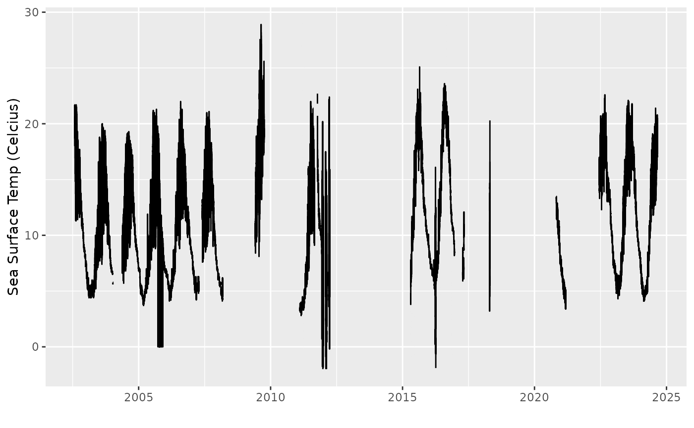

All of the buoys hosted by the NDBC (and available on ERDDAP) can be quickly viewed from the bundled data set buoy_data which along with the buoys ID, NAME, LAT and LON contain other metadata such as the years of operation, the date/time of the last recorded measurement, and the owners of the buoy
buoydata::buoy_data |>
dplyr::as_tibble()
#> # A tibble: 1,316 × 17
#> ID Y1 YN nYEARS lastMeasurement LAT LON STATION_LOC TTYPE
#> <chr> <dbl> <dbl> <int> <dttm> <dbl> <dbl> <chr> <chr>
#> 1 0Y2W3 2012 2015 4 2015-08-18 11:40:00 44.8 -87.3 "Sturgeon B… Weat…
#> 2 18CI3 2014 2015 2 2015-09-21 13:25:00 41.7 -86.9 "Michigan C… Weat…
#> 3 20CM4 2014 2015 2 2015-09-20 16:55:00 42.1 -86.5 "St. Joseph… Weat…
#> 4 23020 2008 2010 3 2010-12-18 11:50:00 22.2 38.5 "Red Sea" Buoy
#> 5 31201 2005 2005 1 2005-08-19 15:00:00 -27.7 -48.1 "Floripa, B… Wave…
#> 6 32012 2007 2018 12 2018-04-09 11:50:00 -19.6 -85.4 "Woods Hole… 2.4-…
#> 7 32301 1984 1986 3 1986-07-12 16:00:00 -9.9 -105. "" 3-me…
#> 8 32302 1986 1995 10 1995-04-03 12:00:00 -18 -85.1 "" 3-me…
#> 9 32487 2008 2010 3 2010-01-08 20:25:00 3.52 -77.7 "Buenaventu… Offs…
#> 10 32488 2008 2009 2 2009-10-16 02:10:00 6.26 -77.5 "Bahia Sola… Offs…
#> # ℹ 1,306 more rows
#> # ℹ 8 more variables: TIMEZONE <chr>, OWNER <chr>, OWNERNAME <chr>,
#> # COUNTRY <chr>, HULL <chr>, PAYLOAD <chr>, FORECAST <chr>, NOTE <chr>This data frame can be used to filter out stations of interest
Variables
Each buoy measures a different set of variables. A list of the
possible variables can be found using the get_variables()
function
buoydata::get_variables()#> variable_name data_type actual_range description
#> 1 apd float 0.0, 95.0 Wave Period, Average
#> 2 atmp float -153.4, 50.0 Air Temperature
#> 3 bar float 800.7, 1198.8 Air Pressure
#> 4 dewp float -99.9, 48.7 Dewpoint Temperature
#> 5 dpd float 0.0, 64.0 Wave Period, Dominant
#> 6 gst float 0.0, 75.5 Wind Gust Speed
#> 7 latitude float -55.0, 71.758 Latitude
#> 8 longitude float -177.75, 179.001 Longitude
#> 9 mwd short 0, 359 Wave Direction
#> 10 ptdy float -15.0, 14.7 Pressure Tendency
#> 11 station String Station Identifier
#> 12 tide float -9.37, 6.15 Water Level
#> 13 time double 4910400.0, 1.7617581E9 Time
#> 14 vis float 0.0, 66.7 Station Visibility
#> 15 wd short 0, 359 Wind Direction
#> 16 wspd float 0.0, 96.0 Wind Speed
#> 17 wspu float -98.7, 97.5 Wind Speed, Zonal
#> 18 wspv float -98.7, 97.5 Wind Speed, Meridional
#> 19 wtmp float -98.7, 50.0 SST
#> 20 wvht float 0.0, 92.39 Wave HeightExample
Find all buoys located between latitude [41,43] and longitude [-71,-67] with a time series of at least 20 years. Then pull and process data from a single buoy.
buoydata::buoy_data |>
dplyr::filter(LAT > 41,LAT < 43) |>
dplyr::filter(LON > -71, LON < -69) |>
dplyr::filter(nYEARS >= 20)
#> # A tibble: 0 × 17
#> # ℹ 17 variables: ID <chr>, Y1 <dbl>, YN <dbl>, nYEARS <int>,
#> # lastMeasurement <dttm>, LAT <dbl>, LON <dbl>, STATION_LOC <chr>,
#> # TTYPE <chr>, TIMEZONE <chr>, OWNER <chr>, OWNERNAME <chr>, COUNTRY <chr>,
#> # HULL <chr>, PAYLOAD <chr>, FORECAST <chr>, NOTE <chr>Lets pull the sea surface temperature (variable name, wtmp) from buoy 44018 - CAPE COD - 9 NM North of Provincetown, MA
buoy_44018 <- buoydata::get_buoy_data(buoyid="44018", var = "wtmp")Then plot the data
p <- ggplot2::ggplot(buoy_44018) +
ggplot2::geom_line(ggplot2::aes(x=time,y=wtmp)) +
ggplot2::ylab("Sea Surface Temp (Celcius)") +
ggplot2::xlab("")
print(p)